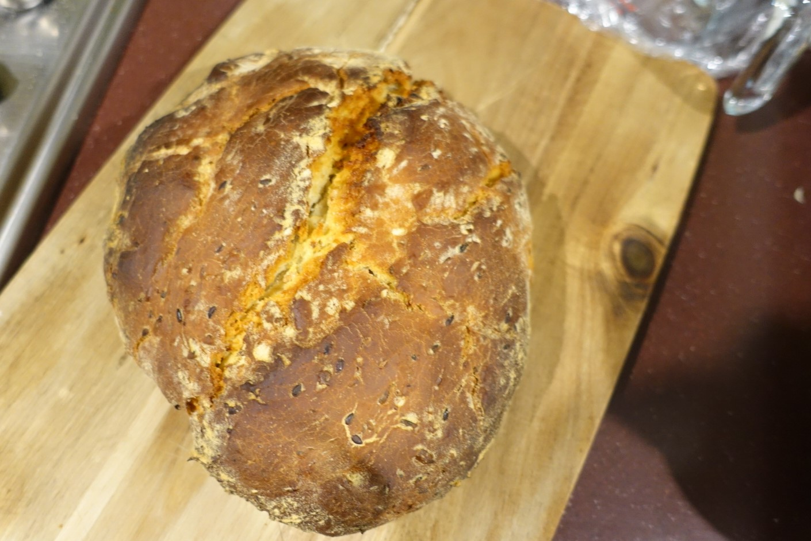

Motivation
During the Covid-19 social distancing, and working from home era, many people have become home bakers. Anecdotally Evidenced by the sold out isles of flour the 2nd quarter of 2020 in supermarket isles across the country.
Furthermore, the graph below shows the trend of people searching for "sourdough" globaly during the covid-19 isolation period. We truely are living in the golen age of home made sourdough
Personally, I have found that there is a lot of hit and miss with baking sourdough, because it's really hard to determine what went wrong in the process between a good and a bad bake, so I'd like a way of easily recording the relevant variables that can be easily controlled and comparing them against final bakes
Because when it comes down to the fundementals of sourdough baking, every yeast culture in a every soughdough starter is unique. Every starter will produce different breads under the exact same baking conditions.
When learning to program, the best way is to have a project that you can be passionate that you can work towards, I think this one fits the bill.
Description
Primarily this service is offered as web-app, written in javascript.
This app will prompt people to enter the following data when starting a baking session:
- Weight of the starter added
- water added (by weight)
- flour added (by weight)
- how long the bread is kneeded, or if done on a machine, how long and what setting it is kneeded at
- photo of the dough after kneeding
- how long the bread is left to rise
- photo of dough after rise
- how long the bread is kneeded for the 2nd time
- photo dough after 2nd rise
- how long the dough is left to rise for a 2nd time
- temp of oven
- lengh of time in oven
- photo of baked bread out of oven.
This data will be visualed on a timeline of their starter, as all the measurements will be tracked against the time they are entered
The user has the option of scrolling back through their timeline, and looking at photos of their starter at various points in its life.
The user would also have an option for scrolling through a list of their finished loafs, and then scrolling through the process that got that bake. i.e. how long was the bread
proved, what flour was used, what temperature the oven was at, and for how long
The aim is, that when a user loads up timeline interface, they can scroll backwards in time, see a photo of a finished loaf they baked, and then look at the conditions that lead to that bake
The app would function on a simple free model with advertisments, with the option to pay for an advertisments free version for a nominal fee
If all goes well, any user should be able to easily get baked bread that looks just like the one below that I baked this week:

Tools and Technologies
This app would primarily written in javascript as a web app, as that is the edge of my currently programming limits that I am learning and exploring.
There is potential to delpoy the app through AWS.
This would be the first attempt at a full web app, and I anticipate significant learning and obstacles along the way.
Skills Required
This app is aimed as a firt "goal" project for myself, that I want to be able to develop myself eventually as an example of what a full stack developer would do.
Ideally, it would utilise simialar skills to what I have seen in advertisements for full stack developers, spesifically I think this will require knowledge with NodeJS, SQL as it will be basically one big data base, with the front faceing being developed on Java.
Outcome
Ideally this app would be a succesful first test and adventure into the programming world. Ideally it would solve the problem that I have expirienced of inconsistent baking, and inconsistant starter by faciliting the easy tracking of the journey of my starter.